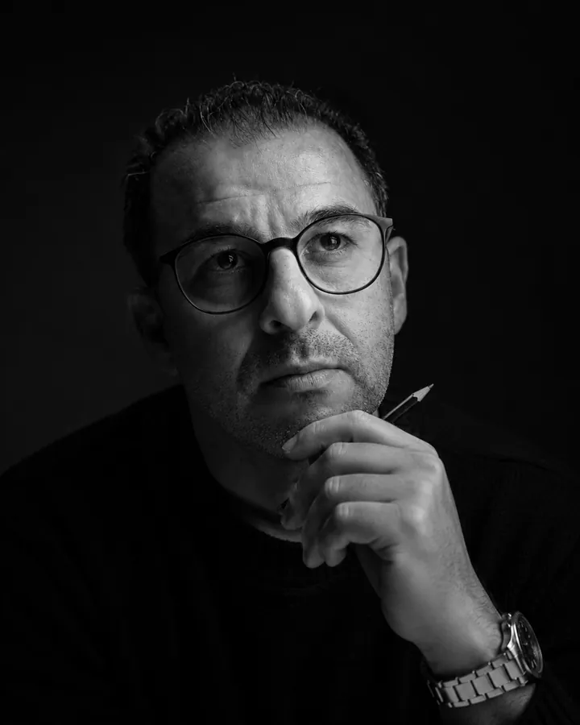

L’œil
Smail B., direction artistique
Directeur artistique depuis plus de 25 ans, formé chez Ogilvy et DDB. Il y traduit des stratégies complexes en concepts visuels, pour Kia, Danone ou Henkel.
Il signe la direction artistique et la production print de 4 éditions du Festival international du film de Marrakech. Pendant 8 ans, il est le directeur artistique exclusif du Trophée Hassan II de Golf, aux côtés du PGA, de l’European Tour et du LET.
Indépendant depuis 2023, il maîtrise toute la chaîne graphique, de l’idée au BAT.